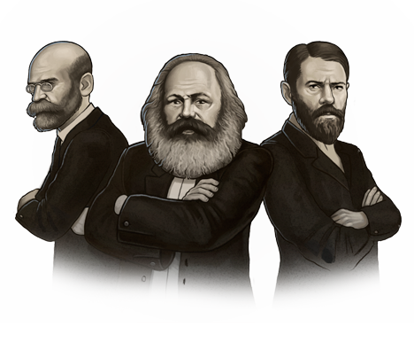

Sociologia
A sociologia é a ciência que estuda as relações entre as pessoas que pertencem a uma comunidade ou aos diferentes grupos que formam a sociedade.
"Sociologia é o olhar do pesquisador, sobre ele mesmo e os indivíduos, que constituem a sociedade, ou seja, olhando como cidadão, membro da mesma"
Edimarcio da silva souza
